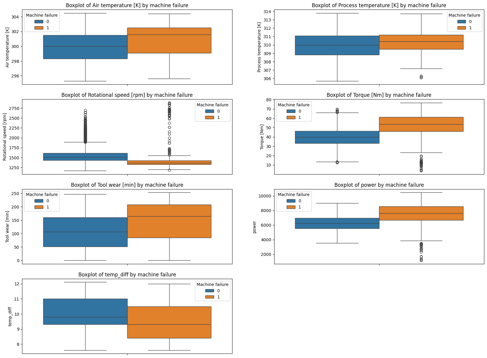

import matplotlib.pyplot as plt # used for plotting
import numpy as np # used for calculations
import pandas as pd # used for data handling
import seaborn as sns # used for plotting
import sklearn.tree as skt # used for decision tree modeling4 Predictive Maintenance via Exploratory Data Analysis
In this section we will explore the concept of predictive maintenance using a synthetic dataset that reflects real predictive maintenance data encountered in industry.
You can download the dataset “AI4I 2020 Predictive Maintenance Dataset” (2020) at this link.
Here is a summary of the variables present in the dataset:
| Variable Name | Role | Type | Units | Description | Target |
|---|---|---|---|---|---|
| UID | ID | Integer | Unique identifier | ||
| Product ID | ID | Categorical | Consists of Type and a variant-specific serial number | ||
| Type | Feature | Categorical | Product quality variant given by letter L (low), M (medium), or H (high) variants | ||
| Air temperature | Feature | Continuous | K | ||
| Process temperature | Feature | Continuous | K | ||
| Rotational speed | Feature | Integer | rpm | ||
| Torque | Feature | Continuous | Nm | ||
| Tool wear | Feature | Integer | min | ||
| Machine failure | Target | Integer | Equals 1 if at least one of the following failures occurs | x | |
| TWF | Target | Integer | Tool wear failure | x | |
| HDF | Target | Integer | Heat dissipation failure | x | |
| PWF | Target | Integer | Power failure | x | |
| OSF | Target | Integer | Overstrain failure | x | |
| RNF | Target | Integer | Random failure | x |
Note
Unfortunately the documentation neither provides details on the type of machine that is simulated nor the product it is thought to produce. For the sake of imagination, we will think of a very simple milling machine that produces parts in three quality variants: low, medium, and high.
The table shows various error types and our task is to gain insights on when they occur.
Note
This is a warmup task with a polished, synthetic dataset and luckily we are provided with a description of the nature of the different failures.
4.1 Loading packages
4.2 Loading the dataset
The dataset is available online in form of a zipped csv file. Source: AI4I 2020 Predictive Maintenance Dataset [Dataset]. (2020). UCI Machine Learning Repository. https://doi.org/10.24432/C5HS5C.
df = pd.read_csv("https://archive.ics.uci.edu/static/public/601/ai4i+2020+predictive+maintenance+dataset.zip")4.3 Quick check data integrity
It is always good practice to check the integrity of the dataset before performing any analysis. This includes checking for missing values, duplicate entries, ensuring that the data types are appropriate for each feature, and looking at simple statistics.
df| UDI | Product ID | Type | Air temperature [K] | Process temperature [K] | Rotational speed [rpm] | Torque [Nm] | Tool wear [min] | Machine failure | TWF | HDF | PWF | OSF | RNF | |
|---|---|---|---|---|---|---|---|---|---|---|---|---|---|---|
| 0 | 1 | M14860 | M | 298.1 | 308.6 | 1551 | 42.8 | 0 | 0 | 0 | 0 | 0 | 0 | 0 |
| 1 | 2 | L47181 | L | 298.2 | 308.7 | 1408 | 46.3 | 3 | 0 | 0 | 0 | 0 | 0 | 0 |
| 2 | 3 | L47182 | L | 298.1 | 308.5 | 1498 | 49.4 | 5 | 0 | 0 | 0 | 0 | 0 | 0 |
| 3 | 4 | L47183 | L | 298.2 | 308.6 | 1433 | 39.5 | 7 | 0 | 0 | 0 | 0 | 0 | 0 |
| 4 | 5 | L47184 | L | 298.2 | 308.7 | 1408 | 40.0 | 9 | 0 | 0 | 0 | 0 | 0 | 0 |
| ... | ... | ... | ... | ... | ... | ... | ... | ... | ... | ... | ... | ... | ... | ... |
| 9995 | 9996 | M24855 | M | 298.8 | 308.4 | 1604 | 29.5 | 14 | 0 | 0 | 0 | 0 | 0 | 0 |
| 9996 | 9997 | H39410 | H | 298.9 | 308.4 | 1632 | 31.8 | 17 | 0 | 0 | 0 | 0 | 0 | 0 |
| 9997 | 9998 | M24857 | M | 299.0 | 308.6 | 1645 | 33.4 | 22 | 0 | 0 | 0 | 0 | 0 | 0 |
| 9998 | 9999 | H39412 | H | 299.0 | 308.7 | 1408 | 48.5 | 25 | 0 | 0 | 0 | 0 | 0 | 0 |
| 9999 | 10000 | M24859 | M | 299.0 | 308.7 | 1500 | 40.2 | 30 | 0 | 0 | 0 | 0 | 0 | 0 |
10000 rows × 14 columns
Just displaying a couple of rows is useful for quickly inspecting the data structure and see if the dataset was correctly ex- and imported.
A few remarks: - UDI appears to be some sort of linear step counter. - Apparently, Product ID also seems to be a unique identifier. - Interestingly, Rotational speed is represented as an integer (rpm), which is a discrete value, while Torque and Tool wear are continuous values. - The target variables are binary indicators of failure types, represented as integers (\(0\) or \(1\)). - The dataset contains 10.000 rows and 14 columns.
df.isna().sum()UDI 0
Product ID 0
Type 0
Air temperature [K] 0
Process temperature [K] 0
Rotational speed [rpm] 0
Torque [Nm] 0
Tool wear [min] 0
Machine failure 0
TWF 0
HDF 0
PWF 0
OSF 0
RNF 0
dtype: int64df.duplicated().sum()np.int64(0)isna detects missing values in the dataframe and duplicated checks for duplicate entries. The dataset appears to be clean, with no missing values or duplicates detected.
df.describe().T| count | mean | std | min | 25% | 50% | 75% | max | |
|---|---|---|---|---|---|---|---|---|
| UDI | 10000.0 | 5000.50000 | 2886.895680 | 1.0 | 2500.75 | 5000.5 | 7500.25 | 10000.0 |
| Air temperature [K] | 10000.0 | 300.00493 | 2.000259 | 295.3 | 298.30 | 300.1 | 301.50 | 304.5 |
| Process temperature [K] | 10000.0 | 310.00556 | 1.483734 | 305.7 | 308.80 | 310.1 | 311.10 | 313.8 |
| Rotational speed [rpm] | 10000.0 | 1538.77610 | 179.284096 | 1168.0 | 1423.00 | 1503.0 | 1612.00 | 2886.0 |
| Torque [Nm] | 10000.0 | 39.98691 | 9.968934 | 3.8 | 33.20 | 40.1 | 46.80 | 76.6 |
| Tool wear [min] | 10000.0 | 107.95100 | 63.654147 | 0.0 | 53.00 | 108.0 | 162.00 | 253.0 |
| Machine failure | 10000.0 | 0.03390 | 0.180981 | 0.0 | 0.00 | 0.0 | 0.00 | 1.0 |
| TWF | 10000.0 | 0.00460 | 0.067671 | 0.0 | 0.00 | 0.0 | 0.00 | 1.0 |
| HDF | 10000.0 | 0.01150 | 0.106625 | 0.0 | 0.00 | 0.0 | 0.00 | 1.0 |
| PWF | 10000.0 | 0.00950 | 0.097009 | 0.0 | 0.00 | 0.0 | 0.00 | 1.0 |
| OSF | 10000.0 | 0.00980 | 0.098514 | 0.0 | 0.00 | 0.0 | 0.00 | 1.0 |
| RNF | 10000.0 | 0.00190 | 0.043550 | 0.0 | 0.00 | 0.0 | 0.00 | 1.0 |
describe provides a summary of the numerical features in the dataset, including count, mean, standard deviation, min, max, and quartiles.
There are no obvious outliers or anomalies in the data based on this summary.
df.dtypesUDI int64
Product ID object
Type object
Air temperature [K] float64
Process temperature [K] float64
Rotational speed [rpm] int64
Torque [Nm] float64
Tool wear [min] int64
Machine failure int64
TWF int64
HDF int64
PWF int64
OSF int64
RNF int64
dtype: objectdtypes provides the data types of each feature in the dataset.
object types are typically storing text data. Here are no additional surprises, as we already noticed the oddities previously.
df.nunique()UDI 10000
Product ID 10000
Type 3
Air temperature [K] 93
Process temperature [K] 82
Rotational speed [rpm] 941
Torque [Nm] 577
Tool wear [min] 246
Machine failure 2
TWF 2
HDF 2
PWF 2
OSF 2
RNF 2
dtype: int64nunique counts the number of unique values in each feature.
We can clearly see that UDI is a unique identifier indeed, as it has a count equal to the number of rows in the dataset. Obviously Product ID is another unique identifier, which most likely does not add anything useful for the analysis. We also observe that Type indeed only contains L, M, and H. And last, we observe that all the error types are indeed binary (as expected).
For digging deeper, we now define two global lists for accessing continuous and error variables more easily throughout the notebook.
CONTINUOUS_VARS = ['Air temperature [K]', 'Process temperature [K]', 'Rotational speed [rpm]', 'Torque [Nm]', 'Tool wear [min]']
ERROR_VARS = ['Machine failure', 'TWF', 'HDF', 'PWF', 'OSF', 'RNF']df[ERROR_VARS].sum()Machine failure 339
TWF 46
HDF 115
PWF 95
OSF 98
RNF 19
dtype: int64Out of 10.000 rows, we have 339 rows that correspond to machine failures. This corresponds to 3.39% of the dataset and is a clear indication of class imbalance.
Luckily we also have access to information of specific error types, which makes it easier to explore.
4.4 Exploring continuous variables by simple plots
Here, we visualize the continuous variables (one by one) against the UDI (Unique Device Identifier) to get an idea of their temporal behavior.
plt.figure(figsize=(20, 15))
for i, col in enumerate(CONTINUOUS_VARS, 1):
plt.subplot((len(CONTINUOUS_VARS) + 1) // 2, 2, i)
sns.lineplot(data=df, x="UDI", y=col)
plt.title(f'{col}')Remember that we are working with a dataset that contains three process types? Let us explore, whether the distributions of the continuous variables differ across these process types.
plt.figure(figsize=(20, 15))
for i, col in enumerate(CONTINUOUS_VARS, 1):
plt.subplot((len(CONTINUOUS_VARS) + 1) // 2, 2, i)
sns.boxplot(data=df, y=col, hue='Type')
plt.title(f'Boxplot of {col} by machine type')Apparently, there are only very little differences between the three process types.
Last, we will check for correlations between the variables.
correlation_matrix = df[CONTINUOUS_VARS].corr()
sns.heatmap(correlation_matrix, annot=True, cmap='coolwarm', fmt='.2f', linewidths=0.5)
plt.title('Correlation Matrix');The correlation matrix reveals: - Air temperature and process temperature are highly positively correlated, indicating that as one increases, the other tends to increase as well. - Rotational speed and torque are negatively correlated, meaning that as rotational speed increases, torque tends to decrease and vice versa.
seaborn provides a convenient way to visualize important characteristics of the dataset using thepairplot function. The diagonal subplots show the distribution of each variable, while the off-diagonal subplots show the relationships between variables.
We included the UDI to have a temporal reference, allowing us to observe how the variables change over time (compare to the previous time series plots). We can also clearly see the correlating variables in this pairplots.
sns.pairplot(df, vars=["UDI"] + CONTINUOUS_VARS)4.5 Feature Engineering
Sometimes, it is easy to create new, meaningful features from the existing ones. Often, process engineers have a deep understanding of the domain and can identify potential new features that may improve model performance. So talking is key!
We will engineer two new features: - Temperature difference between process and ambient temperature. - Power is calculated as Torque * Rotational Speed * 2 * pi, where torque comes in Nm and rotational speed should be in revolutions per second.
df.loc[:, "temp_diff"] = df["Process temperature [K]"] - df["Air temperature [K]"]
df.loc[:, "power"] = df["Torque [Nm]"] * 2 * np.pi * (df["Rotational speed [rpm]"] / 60)4.6 Investigating machine failures
It is easily possible to add another dimension to the visualizations. For example, let us compare the distribution of the continuous variables by machine failures.
CONTINUOUS_VARS_ENG = CONTINUOUS_VARS + ["power", "temp_diff"]
plt.figure(figsize=(20, 15))
for i, col in enumerate(CONTINUOUS_VARS_ENG, 1):
plt.subplot((len(CONTINUOUS_VARS_ENG) + 1) // 2, 2, i)
sns.boxplot(data=df, y=col, hue='Machine failure')
plt.title(f'Boxplot of {col} by machine failure')
The boxplots reveal: - As air temperature increases, the likelihood of machine failure also increases. - High torque, high power and low rotational speed indicate a higher probability of machine failure. - Higher tool wear comes with increased risk of machine failure. - Smaller temperature difference between machine and ambient temperature increases the likelihood of failure.
Luckily, we have more detailed failure information available. Next, we will look at every failure type separately and plot pairplots for each. Sorry for the plot overload. Check the title of each plot and try to find patterns. Discussion follows below.
def plot_pair_with_hue(df, col):
pp = sns.pairplot(df.sort_values(col), vars=["UDI"] + CONTINUOUS_VARS_ENG, hue=col)
pp.figure.suptitle(f"Pair plot stratified by error type '{col}'", y=1.02)
plt.show()for col in ERROR_VARS:
plot_pair_with_hue(df, col)4.6.1 Interpretation - Pairplots
The plot for
TWFclearly indicates that the failure only appears for tool wear times exceeding 200 minutes.HDFoccurs when rotational speed is small and difference between air temperature and machine temperature is low.PWFclearly occurs when power is smaller than ca. 4000 or higher than 9000.OSFis likely when torque and tool wear are elevated.RNFshows no clear pattern.
Alternatively, we could also use a simple explainable AI model to identify the key factors contributing to each failure type. Let us explore this approach with decision trees. Check the titles of the plots and interpret the results.
def plot_decision_tree(df, target_col, feature_cols=['Air temperature [K]', 'Process temperature [K]', 'Rotational speed [rpm]', 'Torque [Nm]', 'Tool wear [min]', 'temp_diff', 'power']):
X = df[feature_cols]
y = df[target_col]
tree = skt.DecisionTreeClassifier(max_depth=3, random_state=42, min_samples_split=5, min_samples_leaf=5)
tree.fit(X, y)
plt.figure(figsize=(20, 20))
skt.plot_tree(tree, feature_names=feature_cols, class_names=["OK", "ERR"], filled=True, rounded=True)
plt.title(f'Decision Tree for {target_col} -- Samples with error: {y.sum()}')
plt.show()for col in ERROR_VARS:
plot_decision_tree(df, col)


4.7 Interpretation - Decision Tree
TWF: Although the classification performs poorly, the first split is made along the tool wear time (value 202.5). For smaller values the process only fails in 2 out of 9328 cases, so almost all of the failures occur with tool wear time above 202.5 min.HDF: Clearly shows that the failure usually occurs when temperature difference is below 8.65 and rotational speed is slower than 1380 rpm.PWF: Occurs when power exceeds 9001 W or is lower than 3496 W.OSF: The decision tree alternately looks at tool wear and torque but is not able to find a good model with a depth of 3. Note that the decision tree is only able to make horizontal or vertical cuts and is therefor sensitive to rotations of the given data. This indicates, that tool wear and torque are the main drivers of theOSFmachine failure type but a simple decision tree is not able to model this relationship.RNF: The model completely fails and shows no pattern.
Please note that the conclusions are quite similar to the ones we made on base of the pairplots.
4.8 The great reveal
The documentation of the dataset also describes the error types as follows:
tool wear failure (
TWF): the tool will be replaced of fail at a randomly selected tool wear time between 200 and 240 mins (120 times in our dataset). At this point in time, the tool is replaced 69 times, and fails 51 times (randomly assigned).heat dissipation failure (
HDF): heat dissipation causes a process failure, if the difference between air- and process temperature is below 8.6 K and the tool’s rotational speed is below 1380 rpm. This is the case for 115 data points.power failure (
PWF): the product of torque and rotational speed (in rad/s) equals the power required for the process. If this power is below 3500 W or above 9000 W, the process fails, which is the case 95 times in our dataset.overstrain failure (
OSF): if the product of tool wear and torque exceeds 11.000 minNm for the L product variant (12.000 for M, 13.000 for H), the process fails due to overstrain. This is true for 98 datapoints.random failures (
RNF): each process has a chance of 0.1 % to fail regardless of its process parameters. This is the case for only 5 datapoints, less than could be expected for 10,000 datapoints in our dataset.
4.9 Conclusion
Many roads lead to Rome. We successfully recovered most of the key factors for failure from the dataset, using clever visualizations and making use of easy to interpret AI tools.
These insights can help improving the reliability of the processes and reduce the likelihood of failures in the future. E.g. the tool wear failure could be mitigated by implementing more frequent tool replacements, while the heat dissipation failure could be addressed by not allowing rotational speeds below 1380rpm. The power failure could be prevented by ensuring that the product of torque and rotational speed stays within the specified limits, and the overstrain failure could be avoided by monitoring the tool wear and torque closely.